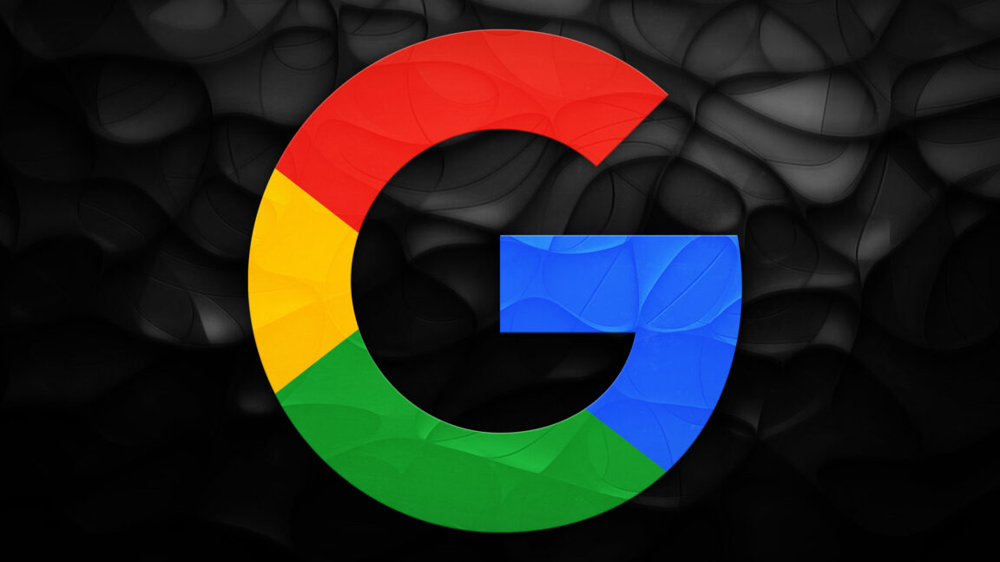

Technology · 24 Oct 2026
Updated Google privacy policy says your Gmail might be used for advertising

Turning on Personal Intelligence gives the company more data for ad targeting.
Multiple independent publishers are reporting on the same development: Updated Google privacy policy says your Gmail might be used for advertising.
The available reports place the development in the Technology category. The accounts were compared for agreement on the central event rather than simply shared names or broad topics.
One of the available reports describes the development this way: Turning on Personal Intelligence gives the company more data for ad targeting.
Readers should consult the linked source reports for additional context, updates and details that may change as the story develops.
Sources
This article was produced by the C. O. Eric AI Newsroom from the cited sources. It is published only after automated evidence and safety checks.